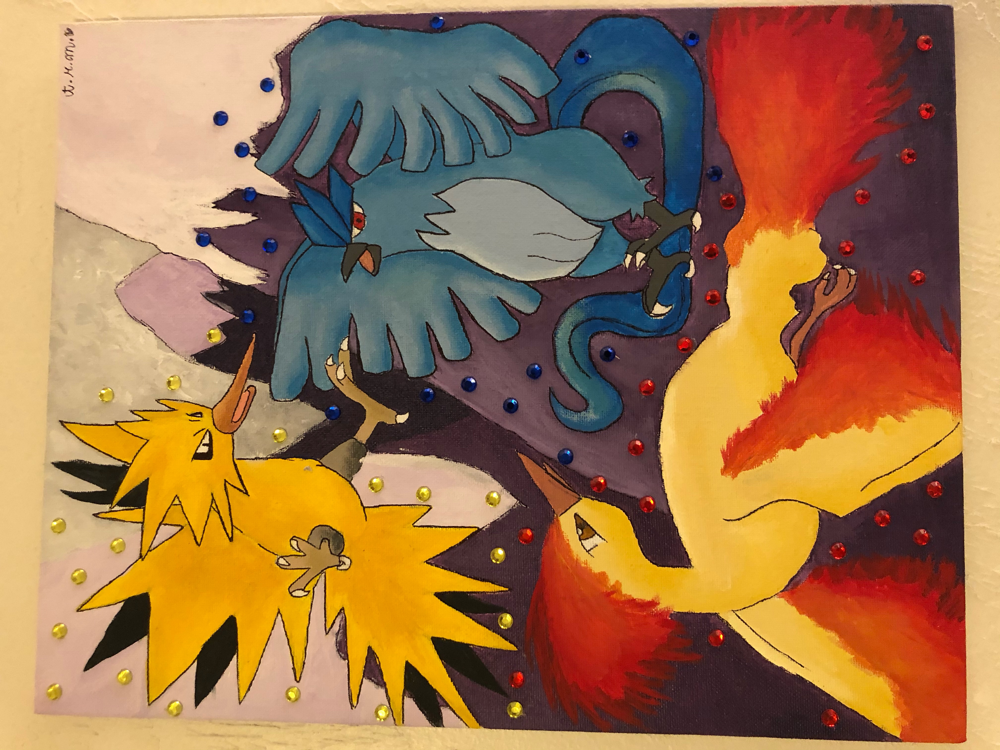
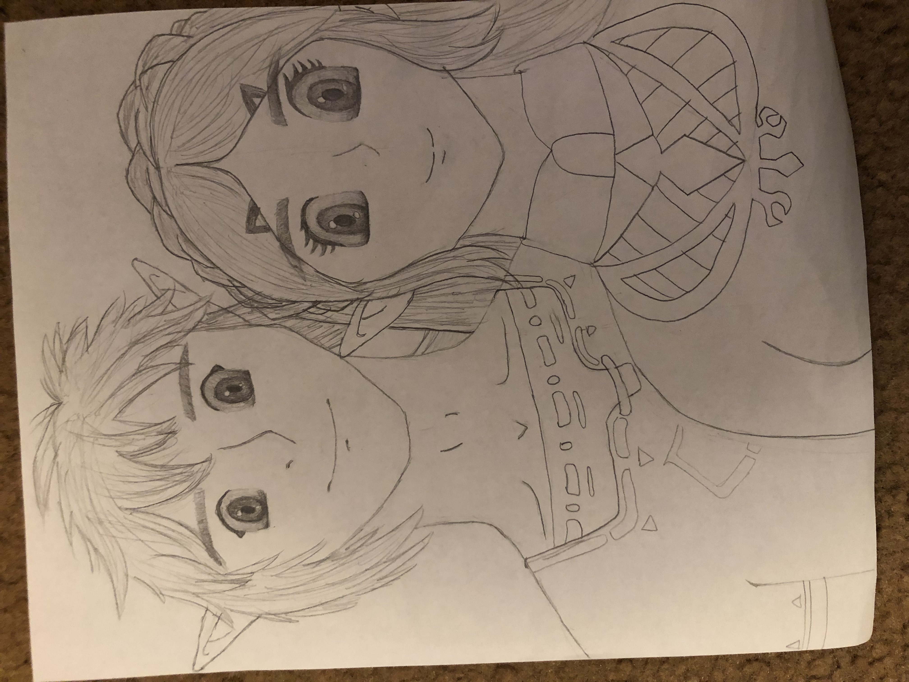
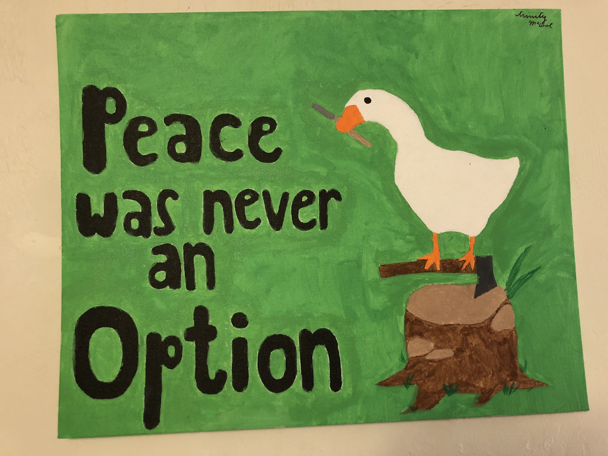
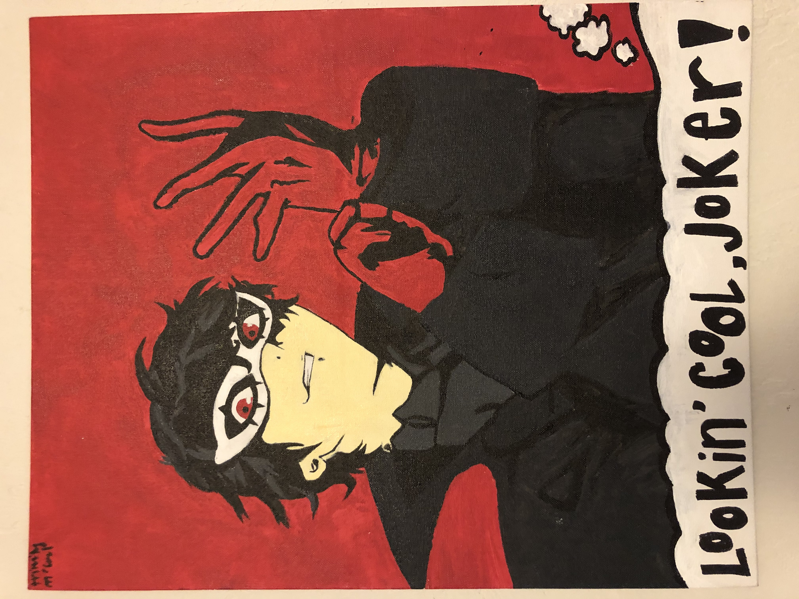
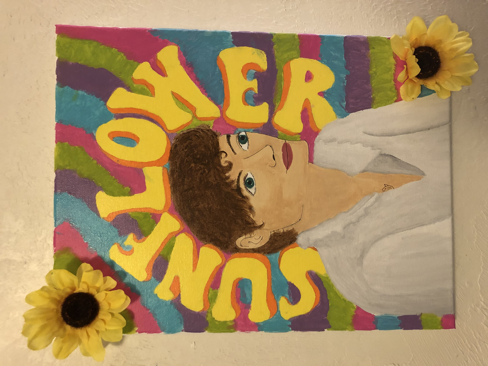

Pokémon is one of my favorite video game franchises, so I dedicated this painting to the legendary birds of the Kanto region-- Articuno, Zapdos, and Moltres.
Another one of my favorite video game franchises is The Legend of Zelda! This is a super quick and rough sketch of Link and Zelda from the game Breath of the Wild.
This was my very first commissioned painting. It was for my friend who is a very good Super Smash Bros. player! (photo to come later)
One of the most fun indie games is Untitled Goose Game, so I dedicated a whole painting to it!
One of my favorite video games of all time is Persona 5, so I painted the protagonist, Joker.
This is by far the worst painting I have ever done, but I decided to include it anyway because I tried a new art style than what I am used to. It is safe to say this art style isn't my thing, but I still like the colors! This was inspired by one of my favorite Harry Styles song, Sunflower, vol. 6.
